SEO · GEO
全球上線後的自然增長
近期成果
- 385%自然搜尋流量
- 173%Google 排名關鍵字
- 1.2 → 45網域評級
成功關鍵
- 重寫全部 SEO 元素
- 建立高質素外鏈
- 以內容配合搜尋增長
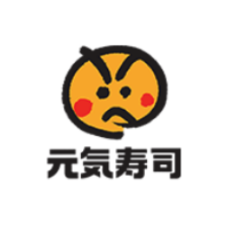
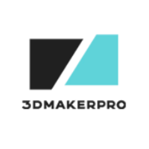
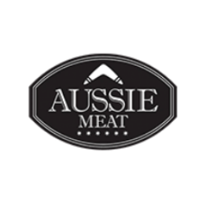
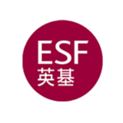
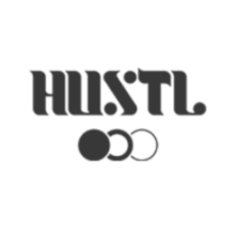
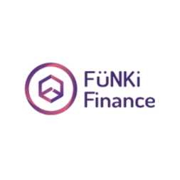
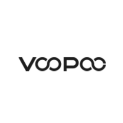
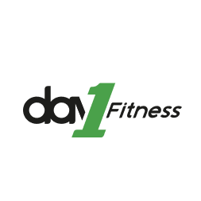
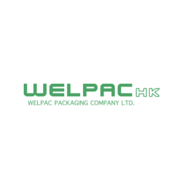
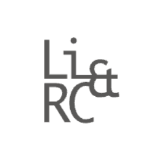
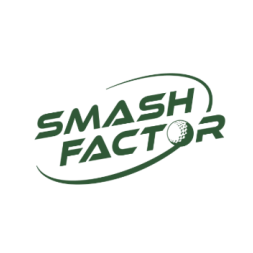
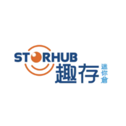
客戶的搜尋習慣變了。愈來愈多人用 ChatGPT、Google AI 摘要及小紅書找資料，品牌若不在這些答案裡，就不會被選中。單靠一個渠道也不夠。AI 更看重完整的全漏斗：SEO、SEM、社交媒體的真實互動、品牌討論和客戶評論，都是它判斷可信度的訊號。
未必。網站可以有流量，訪客卻看完就走，查詢沒有增加。如果流量對不上正確的受眾，內容沒有解答客戶的問題，或轉化流程不清楚，訪客再多也變不成生意。
即使已經做了一段時間的 SEO，策略、內容或技術跟不上競爭，成效也會大打折扣。對手持續優化，搜尋引擎演算法又不時更新，排名便會直接受影響。定期檢視並反覆調整策略，才能把 SEO 的成效做出來。
廣告成本不斷上升。每月預算花了出去，卻說不清哪個渠道真正帶來客戶。搜尋引擎和客戶行為又每天在變。只要市場仍有人搜尋，現在開始就來得及：把有效的加大，無效的調整，曝光和查詢便會逐步累積。
問題往往不在某一個渠道，而是各個渠道沒有連起來。Unique Logic 由策略開始，把搜尋、廣告、內容及網站串連成一個完整的增長系統。
由建立網站到帶來客戶，每一步都由同一個團隊負責。
ChatGPT、Gemini、Perplexity 及 Google AI 摘要正在改變客戶搜尋的方式。我們優化品牌內容與結構化資料，讓 AI 理解、引用並推薦你的品牌。
了解 GEO 服務「合作後 3 個月，網站流量提升了 180%，關鍵字更成功登上 Google 首頁，轉化率大幅提升！」
「Unique Logic 團隊專業且反應迅速。GEO（AI搜索優化）讓我們在 ChatGPT 和 Google AI 總覽中獲得了顯著曝光，直接帶來新客戶查詢！」
「SEM 廣告投放效果超出預期，ROAS 達到 4.5 倍！團隊的數據分析能力讓每一分廣告費都花得值得。」
想獲得同樣的成效嗎？
立即免費諮詢Unique Logic 集搜尋、社交媒體、AI 搜尋及網站專業於同一團隊，是 Google 優秀合作夥伴及 Meta 官方授權代理商，並獲多個業界平台認可。
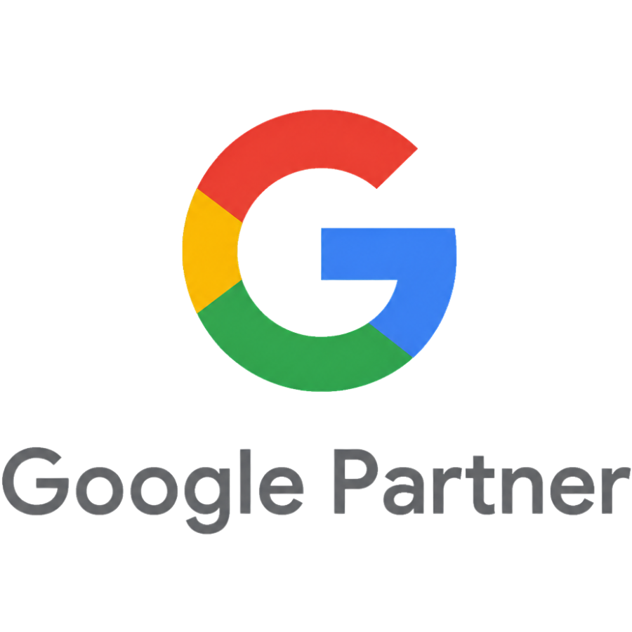
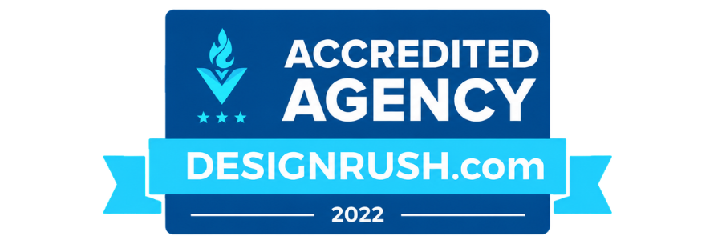
每個項目都由了解你的生意、客戶及競爭對手開始，再按你的目標及預算度身制定方案。
網站、SEO、廣告、社交媒體及口碑由同一團隊統籌，不需要協調多間代理商，策略方向一致。
以 GA4、Google Search Console 及廣告後台的實際數據為準，定期匯報排名、流量、查詢及成本。
熟悉香港市場，能處理繁、簡、英三語內容，同時支援內地品牌出海，以及海外品牌進入香港市場。
分析你的網站、現有渠道及成績，找出最大的增長機會。
了解你的行業和對手，找出可以勝出的位置。
訂立清晰的 KPI、預算及時間表，開始前讓你清楚知道預期成果。
上線後持續追蹤及調整，有效的加大投入，無效的即時調整。
一般而言，3至6個月屬於成效逐步顯現的關鍵階段，流量與關鍵字排名會開始穩定增長；而在7至12個月期間，若能根據數據表現與市場變化持續優化策略，將更有機會推動大量網站流量，並爭取到Google 的首頁排名。
根據我們多年的實戰經驗，只要優化內容能配合Google 演算法更新、市場競爭、用戶搜尋行為及E-E-A-T等因素，大部分關鍵字均有機會穩定於Google首頁位置。Google 亦早已明確表示排名並非任何一方可以控制，因此「保證」一詞並不現實。
SEO 和 GEO 優化屬於中至長期的策略部署，實際成效需要時間累積，因此至少為六個月合約期，而競爭較激烈的行業則需要十二個月合約期。若希望在較短時間內看到明顯成效，可考慮同時配合 SEM 或社交媒體廣告。
即使 SEM 能快速帶來即時曝光，但本質上需要持續投放預算才能維持流量。當市場競爭加劇、廣告成本上升，一旦停止投放廣告，流量亦會隨即大幅下跌。建議配合 SEO／GEO，逐步累積穩定的自然流量，長遠建立更穩定的搜尋表現。
若 GEO 架構與內容已完善優化，相關資訊通常能被各大AI平台準確地捕捉，因為 GEO 著重的是整體行銷漏斗的完整性。若希望針對特定的 AI 平台，也可參考其內容理解與回應邏輯進行優化。
馬上獲取免費網站診斷報告，開始您的數碼營銷之旅